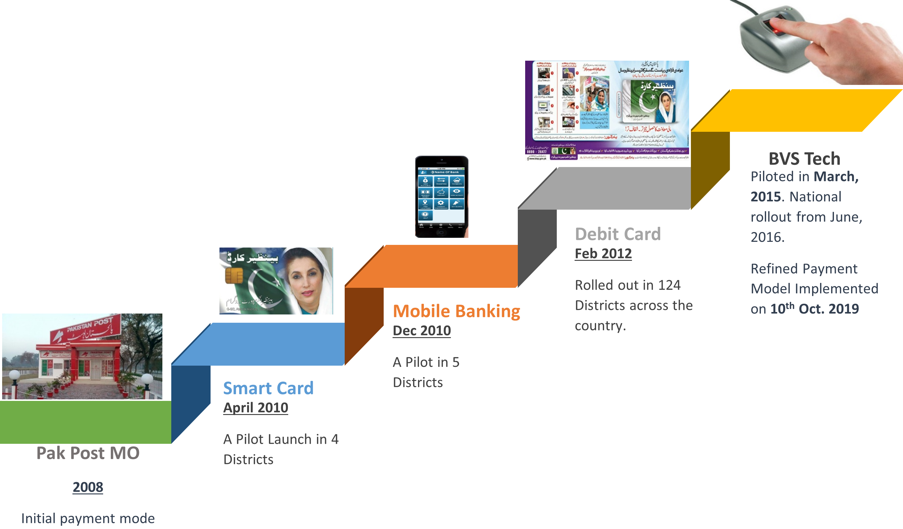
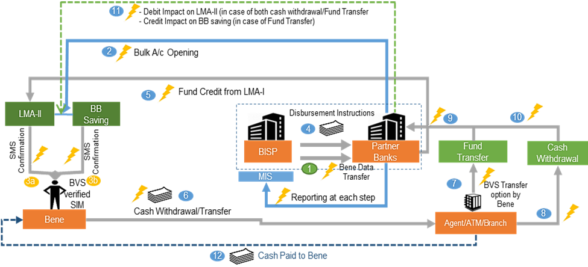

5 Payment Mechanism
Since the inception of the program, BISP has made several reforms to improve its approach to payment delivery, to ensure that the funds actually reach the selected recipients. Initially, the Pakistan post office distributed cash to recipients. This system faced high levels of leakage and petty corruption, with reports of postmen demanding a portion of the cash from recipients before they would deliver the funds (Khan and Qutub 2010; Cheema et al. 2014, 2015). For this reason, the government began transitioning to debit card–based payments in selected districts in 2012. Under this system, beneficiaries received a card (Figure 1) that could be used at an ATM or a human payment agent known as a “Point of Service (PoS)”; PoS agents are typically mobile money agents who provide this service as a side activity. While the debit card system is thought to have reduced petty corruption compared to the post office system, it raised new delivery challenges. For example, beneficiaries frequently lost cards or forgot their personal identification number (PINs). When this occurred, the card would be blocked and beneficiaries faced a difficult process to get it unblocked through the BISP office (Cheema et al., 2015). Cards and PINs were also misappropriated from beneficiaries through theft or fraud. For example, reports suggest that fraudsters were able to purchase BISP cards and PINs from beneficiaries; offer assistance with withdrawing funds, and then abscond with the card; or steal the card and forge the beneficiary’s signature, in cases where a payment agent’s machine was not PIN-enabled and a signature was used for verification. The debit card-based system also allowed beneficiaries’ family members to withdraw funds on their behalf. In some cases, this may have added convenience; in others, it may have resulted in male family members intercepting (and controlling) funds intended to be delivered to female recipients. In summary, neither the post office nor the debit card system fully addressed the concerns of funds being leaked or intercepted by actors outside or within the target beneficiary’s household. In 2016, our baseline year, once the debit card system had been rolled out across the country, only 20 percent of women in our sample reported that they collected the transfer themselves. Moreover, 18 percent of beneficiaries reported that they (or the family members or agents who withdrew money on their behalf) had to unwillingly pay an illegal “fee” or side payment the last time they received funds (an average of 213 Pakistan rupees [PKR] before BVS). Only 87 percent of beneficiaries received three or more of the expected four yearly payments, and on average they received only about 74 percent of the total yearly expected payment amount (approximately 13,906 PKR out of 18,800 PKR) (Cheema et al. 2016a).
5.1 Payment Mechanisms deployed around the world
Social safety net programs are crucial for providing financial assistance and support to vulnerable populations worldwide. These programs aim to alleviate poverty, reduce inequality, and promote social well-being. One key aspect of such programs is the mechanism through which payments are disbursed to beneficiaries. Some of the different payment mechanisms used around the world for social safety net programs, highlighting their features, benefits, and challenges are discussed below:
- Cash Payments: Cash payments involve the direct transfer of funds to beneficiaries in the form of physical cash. This mechanism is widely used due to its simplicity and ease of implementation, especially in areas with limited banking infrastructure. It provides recipients with the flexibility to use the funds as they see fit. However, cash payments can be prone to theft, fraud, and the risk of loss or damage.
Example Program: Bolsa Família, Brazil
Bolsa Família is a conditional cash transfer program in Brazil that aims to alleviate poverty and promote education and healthcare. •
Beneficiaries receive monthly cash payments directly into their bank accounts or through a government-issued social welfare card.
The program has successfully reached millions of families, contributing to poverty reduction and improved social outcomes.
- Bank Transfers: Bank transfers involve the electronic transfer of funds from a government agency or a designated financial institution to the beneficiaries’ bank accounts. This mechanism offers several advantages, such as enhanced security, reduced administrative costs, and increased financial inclusion. Beneficiaries can access their funds through ATMs, online banking, or by visiting a bank branch. Bank transfers are commonly used in countries with well-established banking systems.
Example Program: Familias en Acción, Colombia
Familias en Acción is a conditional cash transfer program in Colombia that aims to alleviate poverty and improve access to education and healthcare for vulnerable families.
Cash transfers are made through direct bank transfers, ensuring efficient and secure delivery of funds to eligible beneficiaries.
Universal Credit, United Kingdom
- Universal Credit is a social assistance program in the United Kingdom that combines multiple welfare benefits into a single payment.
- The program utilizes bank transfers to deposit the monthly payment into the beneficiary’s bank account, supporting individuals and families in need.
- Electronic Payment Cards: Electronic payment cards, often referred to as “benefit cards” or “e-cards,” are pre-loaded with the allocated funds and can be used like debit cards. Beneficiaries can make purchases at authorized retailers or withdraw cash from ATMs. E-cards provide a convenient and secure method of payment, reduce the risk of fraud, and enable tracking of expenditure patterns. However, their effectiveness may be limited in areas with inadequate technological infrastructure.
Example Program: Electronic Benefits Transfer (EBT), United States
EBT is a system used in the United States for delivering benefits like Supplemental Nutrition Assistance Program (SNAP) benefits (formerly known as food stamps) and Temporary Assistance for Needy Families (TANF) funds.
Beneficiaries receive EBT cards that function like debit cards, allowing them to purchase eligible food items from authorized retailers.
EBT has streamlined the distribution process, enhanced convenience for beneficiaries, and reduced the stigma associated with traditional paper food stamps.
- Mobile Money: Mobile money refers to the use of mobile phones for financial transactions, including sending and receiving money. This mechanism has gained popularity in regions where mobile phone penetration is high but access to traditional banking services is limited. Beneficiaries receive their funds in a mobile wallet and can make payments or transfer money through their phones. Mobile money platforms provide convenience, particularly in rural and remote areas, but require reliable network coverage and digital literacy.
Example Program: M-Pesa, Kenya
M-Pesa is a mobile money platform widely used in Kenya for various financial transactions, including social safety net programs.
Programs like Kenya’s Hunger Safety Net Programme leverage M-Pesa to deliver cash transfers to vulnerable households in arid and semi-arid regions.
Mobile money platforms like M-Pesa have increased accessibility, particularly in areas with limited banking infrastructure, and accelerated the disbursement process for beneficiaries.
- Vouchers and Coupons: Vouchers and coupons are a non-cash payment mechanism commonly used for specific goods or services. Beneficiaries receive paper or electronic vouchers that can be redeemed at authorized retailers or service providers. This approach ensures that funds are utilized for their intended purpose, such as food, healthcare, or education. However, voucher systems may face challenges such as logistical issues, limited vendor acceptance, and the potential for fraud or misuse.
Example Program: Education Vouchers, Colombia
Colombia’s education voucher program, known as Sisbén, provides vouchers to low-income families to cover education-related expenses.
Beneficiaries receive vouchers that can be redeemed at participating educational institutions, ensuring access to quality education.
Vouchers offer targeted assistance, promoting educational opportunities for disadvantaged students while fostering accountability and choice.
- In-kind Assistance: In-kind assistance involves providing goods or services directly to beneficiaries instead of cash transfers. For instance, food stamps or food distribution programs ensure that individuals have access to essential nutrition. This approach is advantageous as it addresses specific needs and reduces the risk of misallocation. However, in-kind assistance can be administratively complex, may lack flexibility, and may not address other critical needs beyond the provided goods or services.
Example Program: National Health Service (NHS), United Kingdom
The NHS in the United Kingdom provides comprehensive healthcare services, including in-kind assistance to its beneficiaries.
Medical treatments, consultations, hospital care, and prescription drugs are provided directly to individuals without cash transfers.
In-kind assistance through the NHS ensures equitable access to healthcare services, although it requires significant administrative coordination and funding.
The payment mechanisms used for social safety net programs vary around the world, each with its advantages and challenges. Cash payments, bank transfers, electronic payment cards, mobile money, vouchers, and in-kind assistance all play significant roles in ensuring the effective delivery of benefits to vulnerable populations. The choice of payment mechanism should consider factors such as local infrastructure, financial inclusion levels, beneficiary preferences, program objectives, and the potential for fraud or misuse. Governments and policymakers should continually evaluate and adapt these mechanisms to improve efficiency, transparency, and the overall impact of social safety net programs.

5.2 Pakistan Post
The payment disbursement method adopted by the Benazir Income Support Programme (BISP) in collaboration with Pakistan Post has undergone changes over time. Initially, when BISP was established in 2008, the payment process involved the generation of payment data by BISP, which was then forwarded to Pakistan Post. Pakistan Post would print money orders based on the provided data and deliver them to the doorsteps of the beneficiaries. However, this method had several issues and limitations.
One of the major issues with the money order system was the extended delivery time. It used to take at least 90 days for the entire process to be completed. This delay was primarily due to the manual handling of payment orders, printing, and physical delivery by Pakistan Post. The lengthy delivery time meant that beneficiaries had to wait for a considerable period to receive their payments, causing inconvenience and financial difficulties. Additionally, beneficiaries may be compelled to travel to the Post Office in cases where the Post Office/Postman was unable to deliver payments at the doorstep of the beneficiary due to various reasons.
Another challenge was the late reconciliation of funds. Since the payment data was generated by BISP and forwarded to Pakistan Post, there could be delays in matching the payment records with the actual disbursements. This discrepancy in reconciling the funds led to inefficiencies in the payment process and could potentially result in errors or delays in payment distribution.
Furthermore, the absence of an automated complaint management system added to the difficulties faced by beneficiaries. In case of any issues or complaints regarding the money order payments, there was no streamlined mechanism for beneficiaries to report and resolve their problems. This lack of an automated system meant that complaints had to be dealt with manually, causing additional delays and complexities.
To address these issues, BISP gradually transitioned from the money order system to other more reliable modes of payment. The shift was aimed to streamline the payment process, reduce delivery times, and enhance transparency.
5.3 Mobile Banking
The payment disbursement method adopted by the Benazir Income Support Programme (BISP) through the Benazir Smart Card involved the collaboration of multiple entities, including the National Database and Registration Authority (NADRA) and United Bank Limited (UBL). This mode of payment was introduced in 2010 in four districts: Multan, Mianwali, Mirpurkhas, and Sanghar.
Under this method, NADRA was responsible for the biometric verification of BISP beneficiaries and the issuance of the Benazir Smart Card. The Smart Card served as an identification and payment card for the beneficiaries. On the other hand, UBL was responsible for opening bank accounts for the beneficiaries and facilitating the disbursement of funds.
The Benazir Smart Card system aimed to streamline the payment process and enhance financial inclusion for underprivileged individuals. By linking the card to a bank account, beneficiaries could access their funds conveniently and securely. The Smart Card also provided a means of identification, ensuring that only eligible beneficiaries could access the assistance.
In 2016, all Smart Card districts were converted into the Biometric Verification System (BVS) mode. This conversion involved integrating the biometric verification process directly into the Smart Card system. With BVS, beneficiaries had to undergo biometric authentication using their fingerprints or other unique identifiers to access their funds, adding an extra layer of security and preventing any misuse or fraudulent activities.
However, there were certain issues associated with the payment through the Benazir Smart Card. One major challenge was the insufficient infrastructure of the country’s banking system to support smart card-based withdrawals at ATMs. This limitation restricted the use of the Smart Card primarily to agent locations, where beneficiaries could withdraw cash or make payments. The limited availability of ATMs that could process smart card transactions hindered the convenience and accessibility of funds for the beneficiaries.
To address this issue, efforts were made to expand the ATM network and improve the infrastructure to support smart card-based transactions. This involved collaboration between BISP, NADRA, UBL, and other stakeholders to enhance the banking infrastructure across the country, making it easier for beneficiaries to access their funds through ATMs.
Despite the challenges, the introduction of the Benazir Smart Card system played a significant role in improving the efficiency and transparency of payment disbursements. It reduced the reliance on physical cash/money order and provided beneficiaries with a secure and convenient means of accessing their funds. The integration of biometric verification further enhanced the authentication process, minimizing the potential for fraud or misuse.
5.4 Benazir Mobile Banking
The payment disbursement method adopted by the Benazir Income Support Programme (BISP) through Benazir Mobile banking aimed to provide financial assistance to underprivileged individuals using mobile phone technology. This method was initially tested in five districts, namely Rawalpindi, Islamabad, Larkana, Layyah, and Batagram.
Under this model, the National Database and Registration Authority (NADRA) was responsible for verification services, ensuring that only eligible beneficiaries received the assistance. Banks were involved in the process by opening bank accounts for the beneficiaries, while their partner telecommunication companies (Telcos) were responsible for issuing mobile handsets and SIM cards to the beneficiaries.
The initiative was introduced in 2011 and later converted to either the Benazir Debit Card (BDC) or Biometric Verification System (BVS) modes. These conversions aimed to enhance the functionality and security of the payment system.
However, there were several issues related to payments through Benazir Mobile banking. One major challenge was the beneficiaries’ difficulty in using mobile phones due to illiteracy. Many underprivileged individuals faced challenges in operating the mobile phones and understanding the necessary procedures to access their funds. This posed a barrier to their ability to independently manage their financial transactions.
Another issue was the instances of beneficiaries selling their mobile phones. Some beneficiaries, facing financial difficulties, resorted to selling their mobile handsets to meet their immediate needs. This practice jeopardized their ability to access the funds and utilize the mobile banking system effectively.
Furthermore, payment withdrawals were only possible at agents’ locations. Unlike the traditional banking system where beneficiaries could withdraw funds from ATMs or bank branches, the mobile banking system limited the withdrawal options to designated agents’ locations. This restriction may have caused inconvenience for beneficiaries who had to travel to these locations to access their funds.
While the implementation of Benazir Mobile banking faced certain challenges, it provided an opportunity to leverage mobile phone technology to extend financial services to underprivileged individuals.
5.5 Benazir Debit Card
The payment disbursement method adopted by the Benazir Income Support Programme (BISP) through the Benazir Debit Card (BDC) aimed to provide financial assistance to underprivileged individuals in a more convenient and secure manner. This mode was rolled out in over 124 districts across Pakistan.
Under this method, the National Database and Registration Authority (NADRA) played a crucial role in providing verification services to ensure that only eligible beneficiaries received the assistance. Six banks were involved in the process and were responsible for opening bank accounts for the beneficiaries, issuing personalized debit cards, and facilitating the disbursement of funds.
The BDC beneficiaries had the flexibility to withdraw their funds through ATMs as well as through Point of Sale (POS) agents. This provided multiple options for beneficiaries to access their funds, depending on their convenience and availability of the services. The initiation of the BDC mode began in 2012 and was gradually converted to the Biometric Verification System (BVS) mode since 2016. The transition to BVS aimed to enhance the security and authentication process by integrating biometric verification, such as fingerprints or other unique identifiers, into the payment system. However, there were several issues related to payments through the Benazir Debit Card system. One major challenge was un-personalized cards, which created opportunities for impersonation. Un-personalized cards could potentially be misused or stolen, allowing unauthorized individuals to access the funds meant for beneficiaries. This issue highlighted the importance of personalized cards to ensure secure and accountable disbursements.
Another challenge was the insufficient number of touchpoints available for beneficiaries. This resulted in congestion and long waiting times during the initial days of disbursement. The limited number of ATMs and POS agents created inconvenience for beneficiaries, especially those residing in areas with limited access to financial services.
Furthermore, frequent complaints and service quality issues were reported regarding card issuance, re-issuance, and PIN issuance. Delays or errors in these processes led to frustration and difficulties for beneficiaries in accessing their funds. Addressing these complaints and improving the service quality in card-related procedures became essential to enhance the overall experience of the beneficiaries.
5.6 Bio-Metric Verification System
The payment disbursement method adopted by the Benazir Income Support Programme (BISP) through the biometric verification system (BVS) aimed to enhance transparency, efficiency, and accountability in the payment process. The BVS mechanism was piloted in District Larkana in March 2015 and later rolled out across the country from July 2016.
The BVS system offered a convenient and user-friendly approach to verify the identity of beneficiaries. It required the beneficiary to present their Computerized National Identity Card (CNIC) and undergo biometric verification at the Point of Sale (POS) during payment disbursement.
The introduction of the BVS system brought several advantages to the payment process. Firstly, it enhanced transparency by ensuring that only eligible beneficiaries received the assistance. The biometric verification process minimized the risk of fraud or identity theft, as each individual’s unique biometric data was matched against their registered records.
The BVS system also provided proof of life of beneficiaries in real-time. By verifying their biometric information, the system ensured that the beneficiaries were physically present during the payment disbursement. This feature helped to prevent instances of impersonation or misuse of funds.
Another significant advantage of the BVS system was the elimination of the middleman culture. By directly verifying the beneficiaries through their biometric data, the system reduced the reliance on intermediaries or agents in the payment process. This streamlined the disbursement mechanism and minimized the potential for corruption or misappropriation of funds.
The success of the BVS pilot in District Larkana led to its nationwide implementation. The system’s convenience, enhanced transparency, and real-time authentication prompted BISP to expand its adoption across the country. This expansion aimed to ensure a standardized and efficient payment disbursement method for underprivileged individuals throughout Pakistan.
Overall, the adoption of the biometric verification system by BISP in the payment disbursement process marked a significant step forward in improving transparency, efficiency, and accountability. The system’s reliance on CNIC and biometric verification enhanced security, reduced fraud, and eliminated the middleman culture. By leveraging advanced technology, BISP aimed to ensure that financial assistance reached the intended beneficiaries promptly and securely.
5.7 Refined Bio-Metric Verification System
The payment disbursement method adopted by the Benazir Income Support Programme (BISP) through the refined Biometric Verification System (BVS) aimed to improve transparency, efficiency, and security in the payment mechanism. This refined BVS Payment Solution was designed by BISP in response to operational issues, technological advancements in the banking sector, and suggestions from development partners.
Under this payment solution, each beneficiary was provided with the option of two accounts: a Limited Mandate Account (LMA) and a linked BB Savings Account. The LMA allowed beneficiaries to withdraw their cash assistance biometrically, ensuring a secure and personalized transaction process. On the other hand, the linked BB Savings Account provided beneficiaries with the option to push their cash grants into a traditional savings account.
This arrangement offered flexibility and choice to the beneficiaries. They could choose to withdraw their cash assistance through biometric verification directly from the LMA or transfer it to the linked savings account for further financial management. This dual-account system catered to the varying needs and preferences of the beneficiaries.
To implement the refined BVS Payment Solution, new partner banks were hired in October 2019. The selection of these banks was based on their capabilities to support the refined biometric verification system and provide efficient banking services to the beneficiaries. The refined BVS Payment Solution aimed to address the challenges faced in the previous payment methods and enhance the overall payment disbursement process. By incorporating additional safeguards and options for beneficiaries, it improved the transparency and efficiency of the payment mechanism.
The dual-account system and the integration of biometric verification provided increased security and accountability in the payment process. Biometric authentication ensured that only eligible beneficiaries could access their funds, minimizing the risk of fraud or misuse. The availability of the BB Savings Account offered beneficiaries a means to save and manage their funds more effectively, promoting financial inclusion and empowerment. Overall, the adoption of the refined BVS Payment Solution by BISP marked a step forward in leveraging technology and banking partnerships to enhance the disbursement of payments to underprivileged individuals. The focus on transparency, efficiency, and choice contributed to improving the overall effectiveness of the payment mechanism and ensuring that the financial assistance reached those in need in a secure and accessible manner.
The two banks currently involved in facilitating BISP beneficiary across Pakistan are HBL and Bank Alfalah. HBL is catering to BISP beneficiaries located in Punjab, Sindh, Baluchistan and Islamabad while Bank Alfalah is engaged in Gilgit Baltistan, Azad Jammu & Kashmir and Khyber Pakhtunkhwa.

5.7.1 Challenges / Shortcomings in Current Payment Mechansim
The payment disbursement method adopted by the Benazir Income Support Programme (BISP) through the biometric verification system (BVS) aimed to provide a more transparent and efficient way to deliver financial assistance to underprivileged individuals. However, there were certain shortcomings identified in the current method that impacted its effectiveness.
One of the shortcomings was the lack of interoperability. This means that the BVS system was not seamlessly integrated with other systems or financial institutions. Another issue was the occurrence of embezzlement and fraud within the payment system. Despite the use of biometric verification, there were instances where individuals attempted to deceive the system or engage in fraudulent activities. These incidents highlighted the need for continuous monitoring and improvement in the security measures of the BVS system to prevent such malpractices.
Furthermore, the limitations imposed by the Public Procurement Regulatory Authority (PPRA) rules created a monopolistic approach by financial institutions. These rules restricted competition and allowed only a select few financial institutions to participate in the payment disbursement process. This lack of competition limited the potential benefits that could be achieved through a more diverse range of financial service providers.
Additionally, the current method faced challenges in serving beneficiaries at bank branches. The accessibility and availability of bank branches in remote or underserved areas were limited, which hindered the beneficiaries’ ability to conveniently access their funds. This issue emphasized the need for expanding the network of bank branches or exploring alternative disbursement options to ensure greater financial inclusion.
Moreover, non-compliance with the Single Treasury Account (STA) requirement posed a challenge. The STA policy mandates the consolidation of government funds in a single account to enhance financial transparency and control. Non-compliance with this policy might have resulted in fragmented financial management and hindered efficient utilization of funds.
5.7.2 Desiging of New Innovative Payment Model
In order to improve quality of service in the existing payment model on the basis of feedback from field operations and beneficiaries, innovative technologies, and growing distribution networks, BISP management has initiated the process of identifying new payment model. The key objective of evaluating new technologies and payment model is to further enhance convenience and respect for the beneficiaries while receiving the cash grant, without compromising the standards of transaction security, transparency, real-time reconciliation, audit trails and fraud mitigations.
BISP has initiated the work for designing of new payment model in consultation with key stakeholders as well as various national and international organizations with experience in designing and executing payment systems especially in the social sector.
As approved by the Board, a pilot project based on open loop payment model is being launched in 5 districts namely Sukkur, Lahore, Peshawar, Quetta and North Waziristan.
The pilot will launched through 4 banks (NBP, UBL, BAFL and JSBL) and will be valid for maximum of two tranches. BAFL has also submitted its interest to participate for Social Protection Account in selected districts.
Under this model, beneficiaries will have to open specialized Assan Account in any of the participating bank of their choice. The product paper for specialized Assan Accounts is in process for internal approvals and will be submitted by the banks to SBP for final approval.
There will be direct connectivity and APIs integration between BISP, Banks and RAAST to share information/transactional activities. Connectivity has been established with the banks and APIs integration is under testing.
The funds will be disbursed to beneficiaries through RAAST payment gateway of SBP.
Banks have committed to complete all their preparations by coming Friday, and the pilot could be launched in the following week in any of the pilot districts.